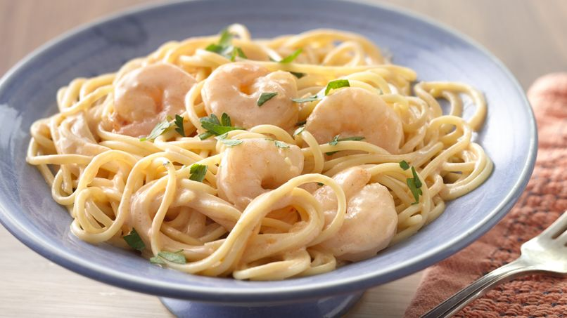

El arroz y los champiñones son productos que gustan prácticamente a toda la familia y con los que se pueden preparar muchas elaboraciones como la que os presentamos en esta entrada, un delicioso risotto de champiñones.
Se trata de un plato nutritivo, muy asequible porque los productos son comunes, muy sencillo de elaborar y sobre todo rápido, por lo que podrás solucionar la comida en prácticamente un abrir y cerrar de ojos.
Para su elaboración necesitaréis estos ingredientes:
300 gramos de arroz de grano redondo.
250 gramos de champiñones laminados (mejor naturales)
1 cebolla.
2 dientes de ajo.
Un vaso de vino blanco para cocinar.
1 litro de caldo de pollo (mejor casero aunque vale de brik siempre que sea de calidad)
100 gramos de queso parmesano rallado.
Aceite de oliva virgen extra.
Pimienta negra recién molida (al gusto)
Sal (al gusto)
Una cucharada de mantequilla
Modo de elaboración
Picaremos la cebolla y el ajo muy fino y laminaremos los champiñones en caso de que sean naturales, de lo contrario podremos usarlos en conserva siempre que sea de una marca de confianza y ofrezcan calidad.
Cubriremos el fondo de una cazuela con aceite de oliva y echaremos la cebolla y al ajo, dejando que se sofría durante unos minutos.
Después incorporaremos los champiñones y salpimentaremos al gusto. En este caso hay que tener en cuenta que debemos echar un poco más porque los champiñones son muy sosos.
Tras unos minutos removiendo suavemente incorporaremos el arroz y removeremos para que no se pegue y así estaremos unos dos minutos.
Añadiremos el vino blanco y continuaremos removiendo hasta que el alcohol se evapore y se consuma un poco el vino. Tras ello iremos incorporando casi todo el caldo de pollo poco a poco, pero éste debe estar caliente porque de lo contrario romperemos la cocción del arroz. Recordadlo, es muy importante.
Dejaremos que el arroz vaya absorbiéndolo y cuando se haya consumido bastante, echaremos el caldo que nos quede.
Continuaremos haciéndolo y una vez comprobemos que el arroz está listo (todo el proceso durara entre 15 y 20 minutos, dependiendo del arroz) echaremos el queso rallado por encima y la cucharada de mantequilla, lo removeremos bien hasta que tenga una textura untuosa y serviremos.
Consejos
El arroz más recomendable para preparar este plato es el de la variedad carnarolli o el arborio, aunque si nos resulta difícil encontrarlo, debemos buscar una marca de arroz redondo que tenga alto contenido en almidón.
Sabremos cuándo está preparado el risotto cuando al cortar los granos no veamos el punto blanco que suele tener cada grano en el centro. No debe estar duro, pero sí tener cierta consistencia, lo que popularmente conocemos como al dente.
Si no encontráis champiñones naturales frescos, se pueden utilizar champiñones laminados en conserva, pero que sean de calidad, para que el plato salga delicioso
Juan Lopez: Me quedo expectacular el rissotto con tu la Receta, muchas gracias!!!
Luis Hernandez: Puedo usar Hongos Portobello???
Patricia Alberti: puedo colocarle pedacitos de tocineta???
Pasta con Camarones y Salsa Cremosa
26 de Noviembre 2018

La pasta con camarones y salsa cremosa es mi comida rápida preferida, es versátil y suele gustar a niños y adultos. Su sabor y su textura la hace un ingrediente versátil que permite preparar un sinfín de deliciosos platos. Esta pasta con camarones y salsa cremosa es una variación un poco más gourmet de la que preparábamos mi hermana y yo cuando estábamos pequeñas. Hacíamos una salsa cremosa con atún y se la agregábamos al espagueti. Para esta ocasión, y para darle el toque más especial, usé camarones que me encantan. Lo mejor de este plato es que puedes tener la comida lista en 20 minutos.
Ingredientes:
1 taza de pasta
2 cucharadas de aceite de oliva
4 dientes de ajo, finamente picados
1 cebolla blanca, finamente picada
1 lb de camarones
2 cucharadas de pasta de tomate
1/4 de taza de vino blanco
2 tazas de crema de leche
2 cucharadas de cebolla picada
Sal (al gusto)
Modo de elaboración:
Cocina la pasta en agua por aproximadamente 8 minutos, moviéndola de vez en cuando para que se suelte.
Cuando la pasta se esté cocinando, sofría el ajo y la cebolla en el aceite hasta que la cebolla esté transparente. Agrega los camarones y saltea hasta que cambien completamente de grises a rosados. Incorpora la pasta de tomate y saltea 1 minuto más. Añade el vino y deja reducir. Vierte la crema y cocina a fuego medio por 8 minutos más.
Mezcla la pasta con la salsa, espolvorea cebolla y sirve.
Luisa Colon: soy alergica a los camarones, puedo hacerla con salmon?
Pepita Querendon: no me gusto para nada, muy mala receta!
Carlos Landaeta: Que esta diciendo la loca de arriba, la receta esta genial!